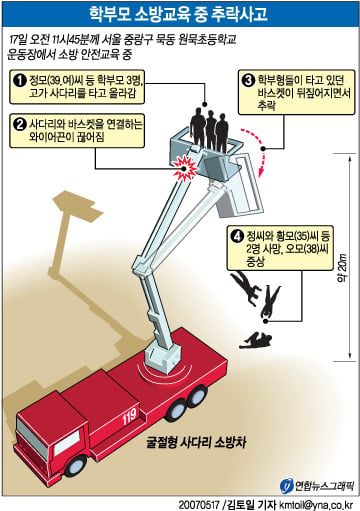

2007년 서울 중랑구 원묵초 운동장
4학년 학생 250여명과 학부모들이 소방안전체험학습 받고 있었음
학부모 3명이 굴절형 사다리차의 구조용 바구니에 탑승해 체험중
27m 높이에서 와이어가 끊어짐
바구니가 마구 흔들리면서 탑승중이던 학부모들 모두 추락함

1명은 팔과 골반이 골절되는 중상. 2명은 현장 사망. 모두 여성
당연하게도 2명의 아이들은 눈앞에서 엄마가 추락사 하는걸 보게 됨
알다시피 현장 사망이라는건...
충격적인건 이미 초등생들은 체험을 마친 뒤였음
헬멧이나 안전띠 등 안전장치도 없었다고 하는데
지금 상식으로는 이해가 되지 않을듯
안전교육한다고 왜 사다리차 타고 올라가는지도 모르겠고
저거 가족들한테 보상이나 제대로 했나? 물론 돈으로 채울수없는 고통이긴한데
ㅅㅂ 미국이였으면 최소 100억은 받아야할 사안같은데